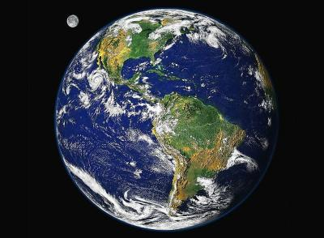

Es nuestro planeta y el único habitado. Está en la ecosfera, un espacio que rodea al Sol y que tiene las condiciones necesarias para que exista vida.
La Tierra es el mayor de los planetas rocosos. Eso hace que pueda retener una capa de gases, la atmósfera, que dispersa la luz y absorbe calor. De día evita que la Tierra se caliente demasiado y, de noche, que se enfríe.
Siete de cada diez partes de la superficie terrestre están cubiertas de agua. Los mares y océanos también ayudan a regular la temperatura. El agua que se evapora forma nubes y cae en forma de lluvia o nieve, formando rios y lagos. En los polos, que reciben poca energía solar, el agua se hiela y forma los casquetes polares. El del sur és más grande y concentra la mayor reserva de agua dulce.
La Tierra no es una esfera perfecta, sino que tiene forma de pera. Cálculos basados en las perturbaciones de las órbitas de los satélites artificiales revelan que el ecuador se engrosa 21 km; el polo norte está dilatado 10 m y el polo sur está hundido unos 31 metros.
La Tierra se formó hace unos 4.650 millones de años, junto con todo el Sistema Solar. Aunque las piedras más antiguas de la Tierra no tienen más de 4.000 millones de años, los meteoritos, que se corresponden geológicamente con el núcleo de la Tierra, dan fechas de unos 4.500 millones de años, y la cristalización del núcleo y de los cuerpos precursores de los meteoritos, se cree que ocurrió al mismo tiempo, unos 150 millones de años después de formarse la Tierra y el Sistema Solar. Foto 3
Después de condensarse a partir del polvo cósmico y del gas mediante la atracción gravitacional, la Tierra era casi homogénea y bastante fría. Pero la continuada contracción de materiales y la radiactividad de algunos de los elementos más pesados hizo que se calentara.
Después, comenzó a fundirse bajo la influencia de la gravedad, produciendo la diferenciación entre la corteza, el manto y el núcleo, con los silicatos más ligeros moviéndose hacia arriba para formar la corteza y el manto y los elementos más pesados, sobre todo el hierro y el níquel, cayendo hacia el centro de la Tierra para formar el núcleo.
Al mismo tiempo, la erupción de los numerosos volcanes, provocó la salida de vapores y gases volátiles y ligeros. Algunos eran atrapados por la gravedad de la Tierra y formaron la atmósfera primitiva, mientras que el vapor de agua condensado formó los primeros océanos.
El magnetismo terrestre significa que la Tierra se comporta como un enorme imán. El físico inglés William Gilbert fue el primero que lo señaló, en 1600, aunque los efectos del magnetismo terrestre se habían utilizado mucho antes en las brújulas primitivas. Foto 5
La Tierra está rodeada por un potente campo magnético, como si el planeta tuviera un enorme imán en su interior cuyo polo sur estuviera cerca del polo norte geográfico y viceversa. Por paralelismo con los polos geográficos, los polos magnéticos terrestres reciben el nombre de polo norte magnético y polo sur magnético, aunque su magnetismo real sea opuesto al que indican sus nombres.
El polo norte magnético se sitúa hoy cerca de la costa oeste de la isla Bathurst en los Territorios del Noroeste en Canadá. El polo sur magnético está en el extremo del continente antártico en Tierra Adelia.
Las posiciones de los polos magnéticos no son constantes y muestran notables cambios de año en año. Las variaciones en el campo magnético de la Tierra incluyen el cambio en la dirección del campo provocado por el desplazamiento de los polos. Esta es una variación periódica que se repite cada 960 años. También existe una variación anual más pequeña.
| Radio: | 6.371 km |
| Edad: | 4,54 mil millones de años |
| Masa: | 5,972E24 kg |
| Distancia desde el Sol: | 149.600.000 km |
| Población: | 7,046 miles de millones (2012) |
| Luna: | Luna |